返回
Wiki
日本庭院 Japanese_Garden
B变色龙
B宝塔
B贝壳
C彩旗
C船
C茶勺
C长笛
G弓
G狗
G鼓
H护身符
H海星
H海马
H猴子
H花瓶
H蝴蝶
J卷轴
J箭
J菊花
L篮子
L莲花
L铃铛
L龙
M木屐
M毛虫
M猫
M面具
N念珠
N鸟居
P琵琶
P耙子
P螃蟹
S双节棍
S扇子
S扇子
S手里剑
S梳子
S水壶
T太阳
T头盔
T桃子
W乌龟
W围棋
W武士刀
X熏香炉
Y月亮
Y鱼
Y鸭子
Z折纸
Z章鱼
Z竹子
Z钟
活动隐藏物品 Event Hidden Object
H护身符 Amulet
J箭 Arrow
Z竹子 Bamboo
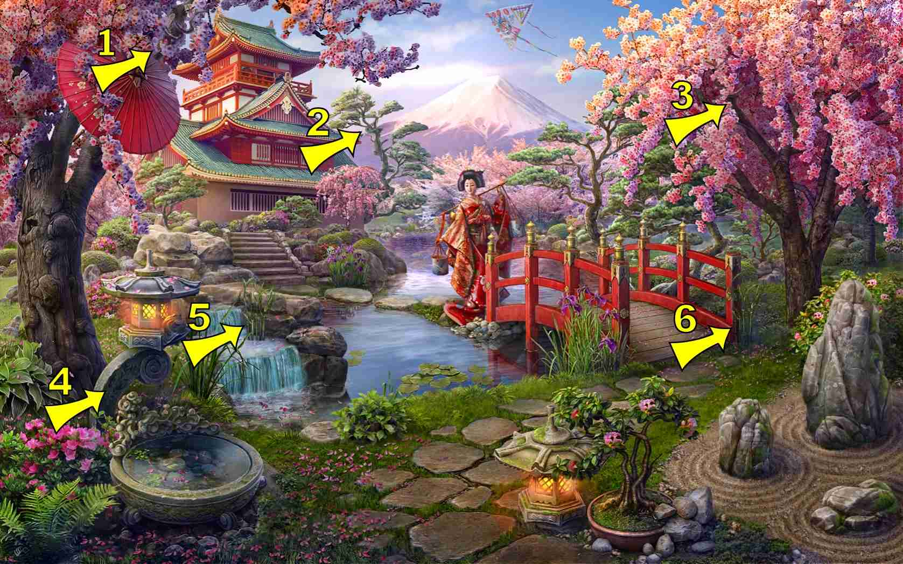
L篮子 Basket
L铃铛 Bell
G弓 Bow
C彩旗 Bunting Flags
H蝴蝶 Butterfly
M猫 Cat
M毛虫 Caterpillar
B变色龙 Chameleon
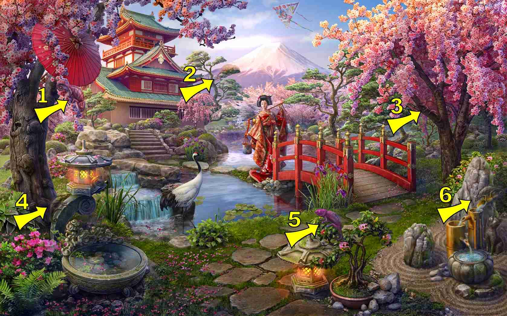
J菊花 Chrysanthemum
Z钟 Clock
S梳子 Comb
P螃蟹 Crab
G狗 Dog
L龙 Dragon
G鼓 Drum
Y鸭子 Duck
S扇子 Fan, see "Hand Fan"
Y鱼 Fish
C长笛 Flute
M木屐 Geta
W围棋 Go
S扇子 Hand Fan
T头盔 Helmet
W武士刀 Katana
S水壶 Kettle
L莲花 Lotus
P琵琶 Lute
M面具 Mask
H猴子 Monkey
Y月亮 Moon
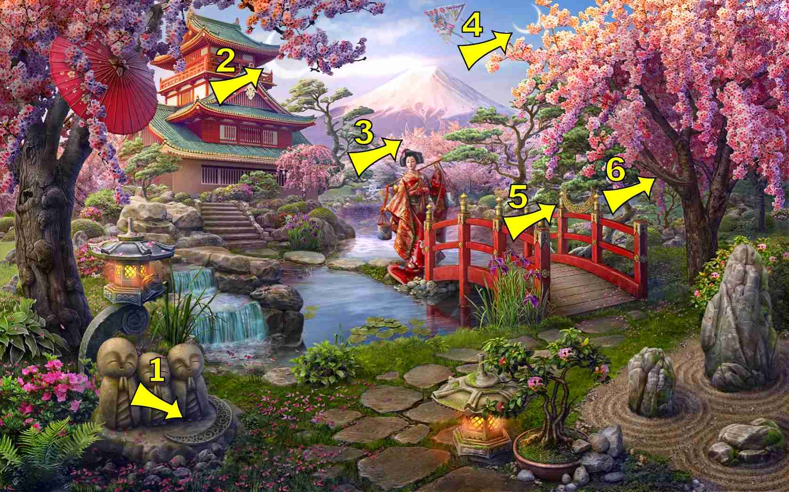
S双节棍 Nunchucks
Z章鱼 Octopus
X熏香炉 Oil burner
Z折纸 Origami
B宝塔 Pagoda
T桃子 Peach
P耙子 Rake
N念珠 Rosary
J卷轴 Scroll
H海马 Seahorse
B贝壳 Shell
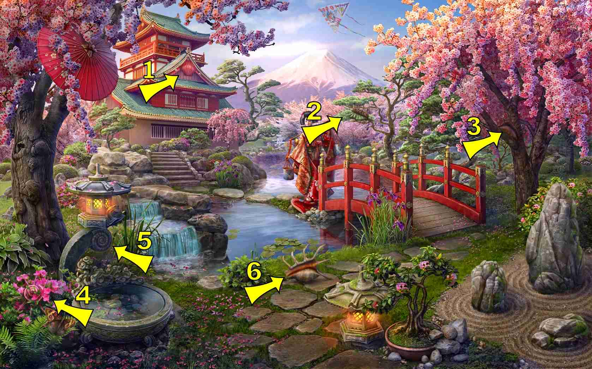
C船 Ship
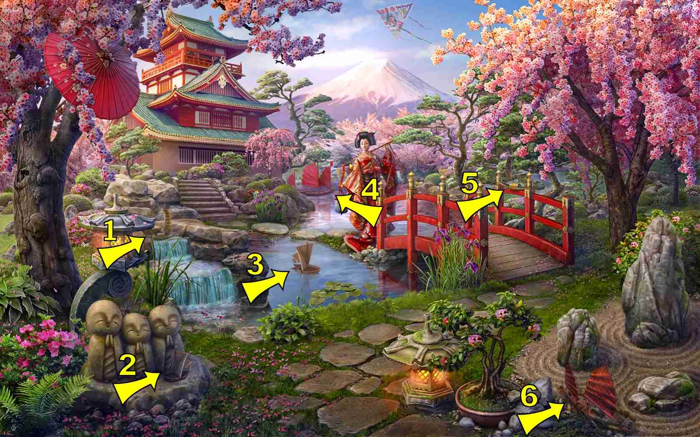
S手里剑 Shuriken
H海星 Starfish
T太阳 Sun
C茶勺 Tea Ladle
N鸟居 Torii
W乌龟 Turtle
H花瓶 Vase
 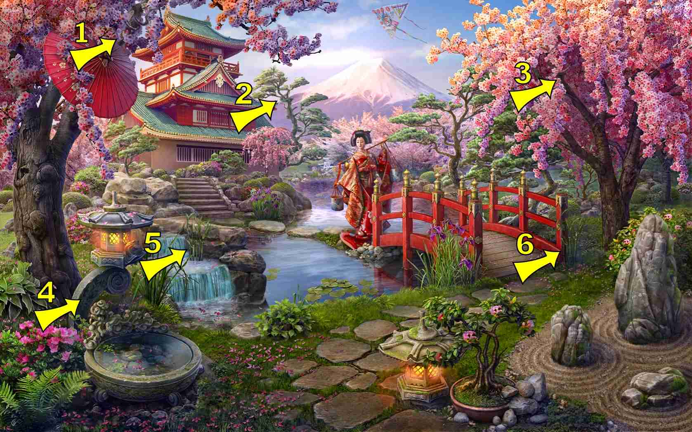
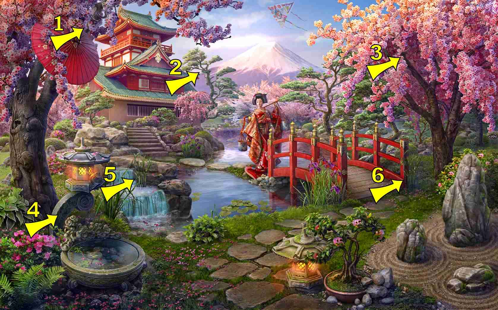
 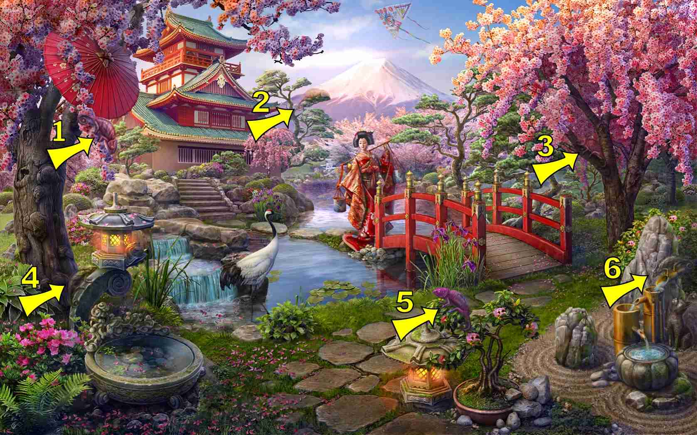
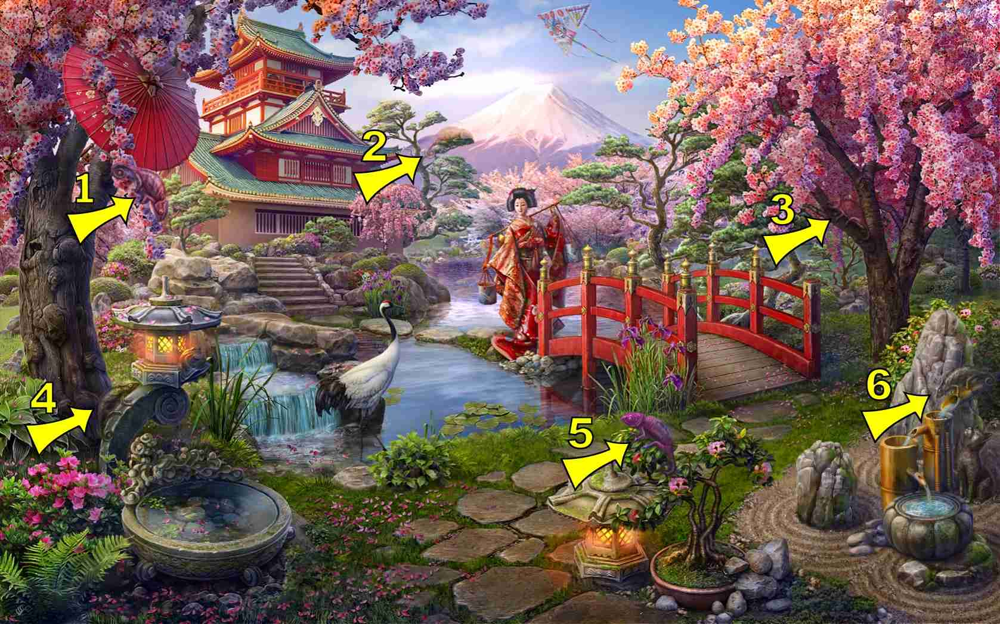
 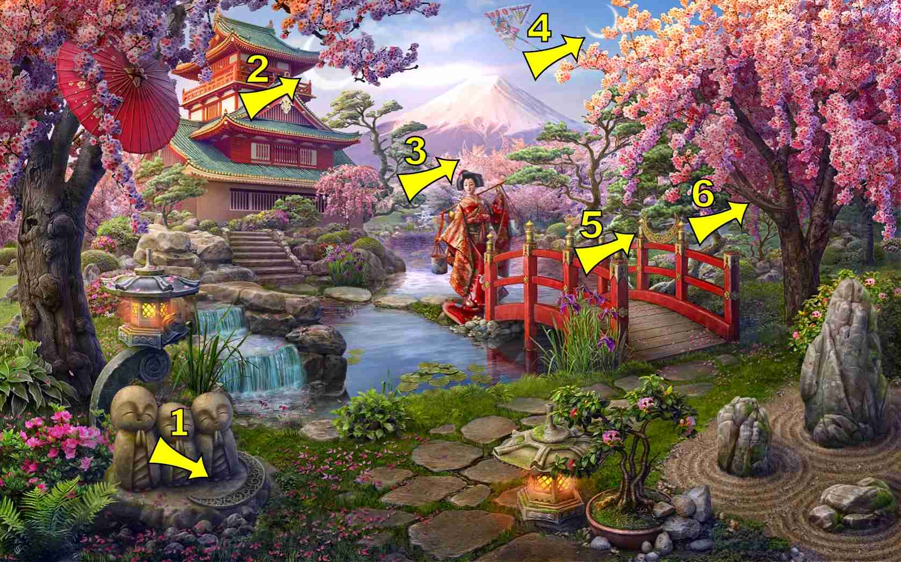
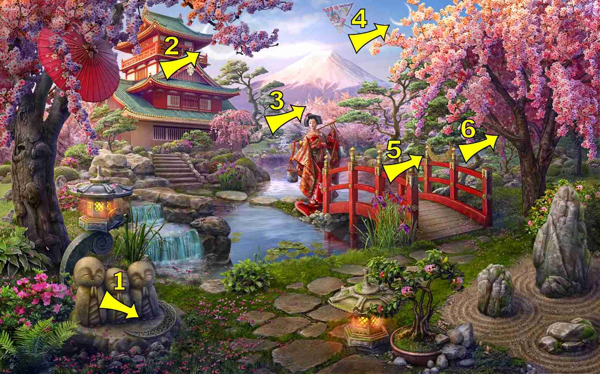
 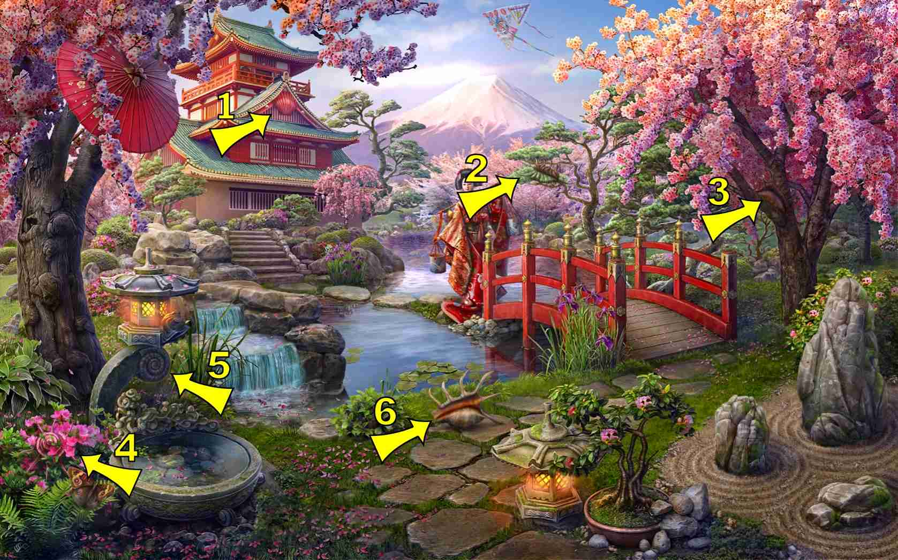
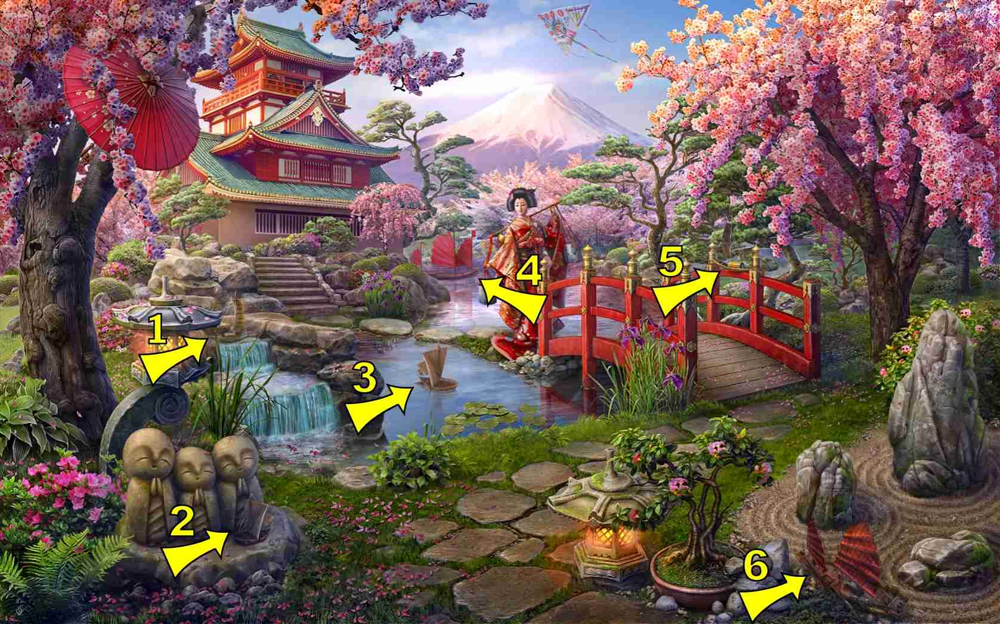
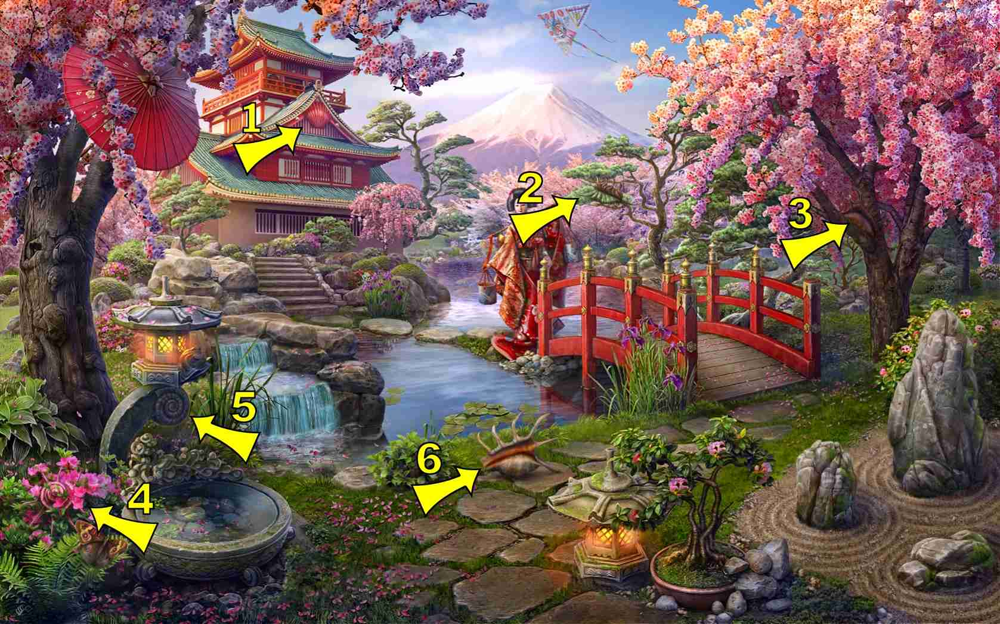
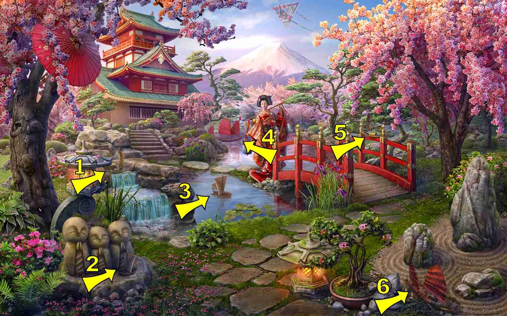